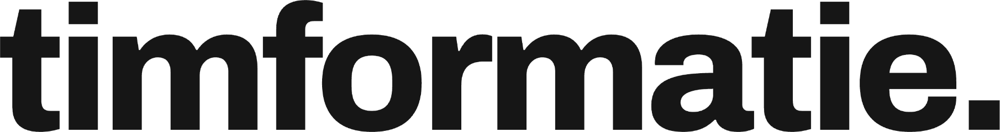

De coöperatieThe cooperative
Partners die voor elkaar instaan.
Partners who vouch for each other.
SRDP wordt geleverd door Managed Service Providers uit de coöperatie. Ze bouwen op dezelfde open blauwdruk, delen wat ze leren en kunnen elkaars werk overnemen.
SRDP is delivered by Managed Service Providers from the cooperative. They build on the same open blueprint, share what they learn and can take over each other's work.
Het modelThe model
Concurrenten, en toch één front.
Competitors, yet one front.
Elke partner is een zelfstandig bedrijf met eigen klanten. Maar binnen de coöperatie gelden gedeelde afspraken: dezelfde blauwdruk, dezelfde kwaliteitsstandaard, dezelfde openheid.
Each partner is an independent company with its own clients. But inside the cooperative, shared rules apply: the same blueprint, the same quality standard, the same openness.
Voor jou als klant betekent dat: bevalt het niet, dan neemt een andere partner het beheer over, op hetzelfde platform.
For you as a client this means: if it doesn't work out, another partner takes over, on the same platform.
Founding partnersFounding partners
De partners van het eerste uur.
The partners from day one.
In alfabetische volgorde. De coöperatie staat open voor nieuwe partners.
In alphabetical order. The cooperative is open to new partners.
Conceptprofielen — elke partner scherpt eigen tekst en logo nog aan. Draft profiles — each partner still refines its own copy and logo.Specialist in data en AI voor de zorg. Brengt diepe domeinkennis van zorgdata, terminologieën en gegevensuitwisseling in de coöperatie.
Specialist in data and AI for healthcare. Brings deep domain knowledge of health data, terminologies and data exchange to the cooperative.
Strategie en architectuur voor data en AI. Helpt organisaties de soevereine route te kiezen, en vertaalt die naar een werkende roadmap.
Strategy and architecture for data and AI. Helps organisations choose the sovereign route, and translates it into a working roadmap.
Cloud-native engineering. Bouwt en beheert de platforminfrastructuur waarop SRDP draait, van Kubernetes tot CI/CD.
Cloud-native engineering. Builds and operates the platform infrastructure SRDP runs on, from Kubernetes to CI/CD.

Data engineering en platformbouw. Vertaalt de SRDP-blauwdruk naar werkende dataplatforms bij klanten, en draagt actief bij aan de standaard.
Data engineering and platform building. Translates the SRDP blueprint into working data platforms for clients, and actively contributes to the standard.
 Yannick
YannickVinkesteijn
Lead developer bij DHD en data scientist met een achtergrond in computational science. Ze bouwt aan federatief leren over ziekenhuizen heen en draagt vanuit de praktijk bij aan de open SRDP-blauwdruk.
Lead developer at DHD and a data scientist with a background in computational science. She builds federated learning across hospitals and contributes to the open SRDP blueprint from hands-on practice.
Dezelfde richtingSame direction
We bouwen niet alleen.
We are not building alone.
Overal werken mensen aan digitale autonomie en een open internet. Twee initiatieven waarin wij onze missie herkennen:
Everywhere, people are working on digital autonomy and an open internet. Two initiatives in which we recognise our mission:
Rijks ICT Gilde
Binnen de Rijksoverheid werkt het Rijks ICT Gilde aan open source en digitale autonomie, met eigen mensen en voor de publieke zaak. Wij herkennen onze missie in de hunne en bouwen in dezelfde richting.
Within the Dutch central government, the Rijks ICT Gilde works on open source and digital autonomy, with its own people and for the public good. We recognise our mission in theirs and build in the same direction.
rijksorganisatieodi.nl/rijks-ict-gilde →Mozilla Foundation
Onze visuele identiteit is gebouwd met de open brand resources van de Mozilla Foundation, waarvoor dank. Belangrijker: hun werk aan een gezond, open internet is de richting waarin ook wij bewegen.
Our visual identity is built with the Mozilla Foundation's open brand resources, with thanks. More importantly: their work towards a healthy, open internet is the direction we are moving in too.
mozillafoundation.org →Word partnerBecome a partner
Ruimte voor de volgende MSP.
Room for the next MSP.
Host SRDP als beheerde dienst voor jouw klanten en word mede-eigenaar van de standaard. Hoe meer partners, hoe sterker de garantie voor elke klant.
Host SRDP as a managed service for your clients and become co-owner of the standard. The more partners, the stronger the guarantee for every client.